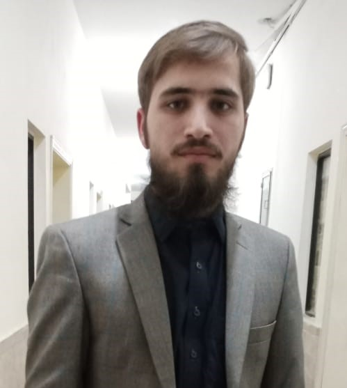

{kind=link}
CONTACT
NAME :Abu Zar Farid
.png) MOBILE NUMBER :03453408563
MOBILE NUMBER :03453408563
.png) EMAIL :abuzaricp456@gmail.com
EMAIL :abuzaricp456@gmail.com
LINKEDIN :Visit to Linkedin
Welcome to our website! We are thrilled to have you here and hope you'll find our online space as warm and inviting as a friendly greeting. Whether you're a first-time visitor or a returning member of our community, we extend our heartfelt welcome to you. Explore our pages to discover a world of information, inspiration, and opportunities waiting just for you. Thank you for choosing to be a part of our online family, and we look forward to sharing this exciting journey with you.
Hello!Everyones my name is Abu Zar Farid.I belong to nowshera.I done my schooling from my village and then my FSC in PRE-ENGINEERING from ISLAMIA COLLEGE PESHAWAR.Currently i am enrolled in bachelor of science in computer science in UET PESHAWAR.
I am a highly motivated individual with a diverse background and a passion for learning and personal growth. My academic journey has been marked by a strong commitment to excellence and a curiosity-driven approach to education. I hold a Bachelor's degree in Computer Science, which provided me with a solid foundation in programming, algorithms, and problem-solving. During my undergraduate years, I actively participated in coding competitions, where I honed my skills and developed a love for tackling complex challenges.
Throughout my academic journey, I have consistently maintained a high GPA and have been recognized for my academic achievements. I was awarded the "Outstanding Student in Computer Science" for two consecutive years and received a scholarship for my exceptional performance in a research project focused on artificial intelligence. These accolades have reinforced my dedication to academic excellence and motivated me to continually strive for intellectual growth and innovation. My key skills and areas of expertise include proficiency in programming languages such as Python, Java, and C++, as well as expertise in data structures and algorithms.
I done many projects on web development.
Create a web app for managing tasks and to-do lists. Implement features like task creation, due dates, and priority levels.
NAME :Abu Zar Farid
MOBILE NUMBER :03453408563
EMAIL :abuzaricp456@gmail.com
LINKEDIN :Visit to Linkedin